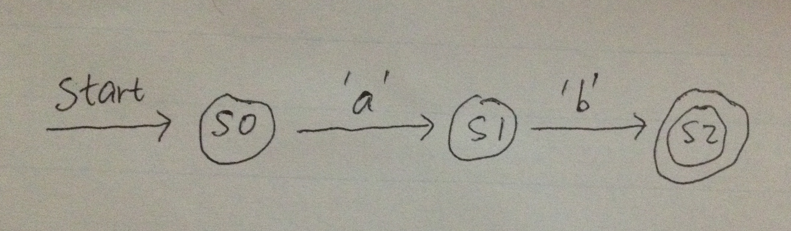
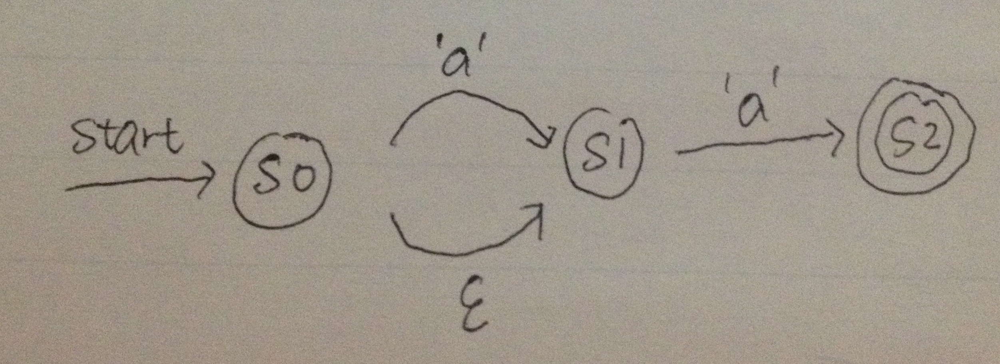
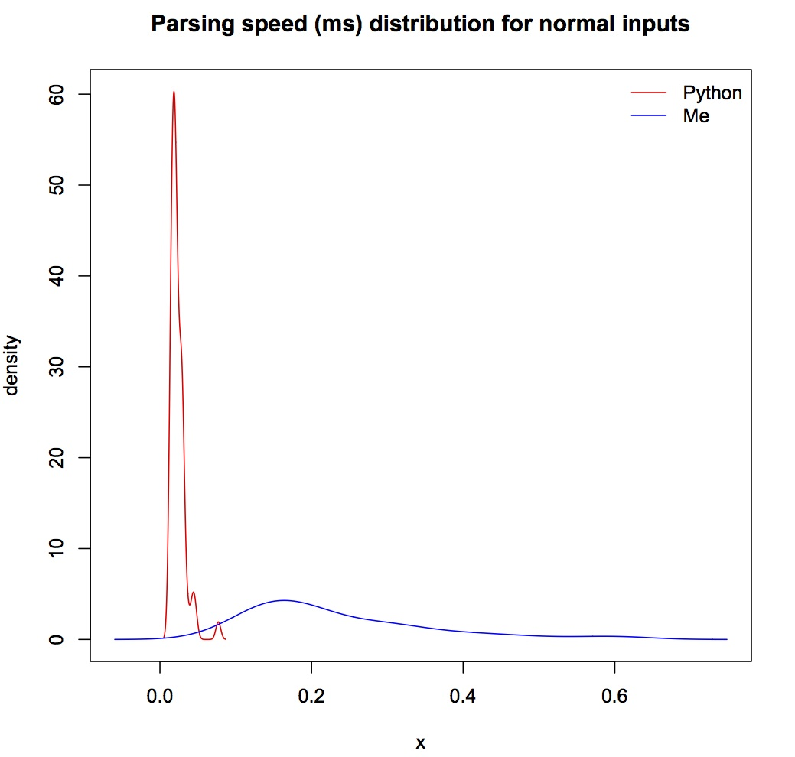
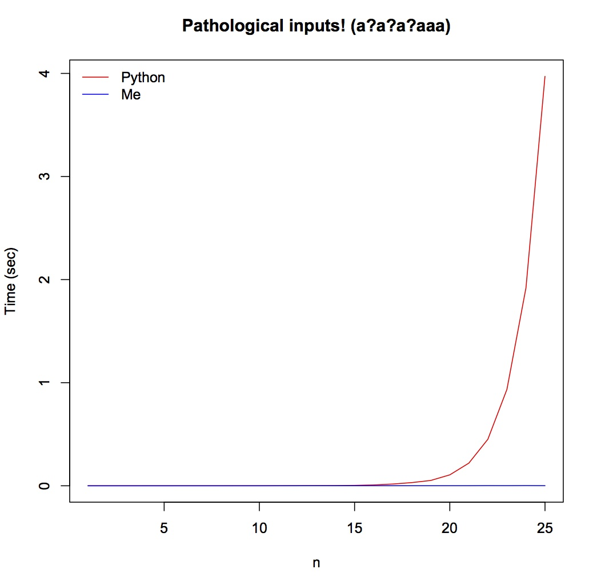

Regex parsing: Thompson's algorithm
This is a repost of my previous blog article at the old domain.
Source code can be found here
Theory
The central idea behind a regex engine is non-deterministic automata, NFA. While the name is scary, it is just a state machine which can transit to other state machines on certain characters or nothing (which is called an "epsilon transition")
For example, below is an NFA for the simple concatenation regex ab:

s0 is the start state. It can accept one character 'a' and transform to state s1. Similarly s1 can only accept one character 'b' and transfer to state s2. s2 is the final state, if we have exhausted the input string and the current state is a final state, the pattern matching is successful.
Below is a slightly more complicated example, matching a?a:

Here the transition with an epsilon means a state can transform into the next state without any input. Therefore this combined NFA matches both aa and a, i.e. a?a.
To build a regex engine is just to build an NFA corresponding to the input regex pattern, which can be done similarly as parsing arithmetic expressions, i.e. push individual NFAs for individual characters onto a stack, upon seeing an operator, eg star/question mark/alternation/concatenation, pop NFAs from the stack, connecting the popped NFAs to form a new NFA and push back onto the stack again.
I recommend these two excellent articles on NFA. 1. How Regexes Work 2. Regular Expression Matching Can be Simple and Fast
Thompson's algorithm
The difference between Thompson's algorithm and the current backtracking implementation in Python/Ruby/... lies in the treatment for multiple transitions. Backtracking algorithm tracks only one transition at one step (always choose the greedy transition) and backtrack to another route if current route fails, while Thompson's algorithm tracks all possible transitions simultaneously.
Take the above a?a for example, suppose we are matching an input string of a to this NFA. The backtracking algorithm will try the a transition from s0 to s1 first since it is greedy, but this route fails since input is exhausted at non-final state s1, so the algorithm backtracks to s0 and choose the epsilon transition this time, and is able to arrive at the final state s2 correctly. On the other hand, Thompson's algorithm will try to track both a and epsilon transition simultaneously. Before it reads anything, both s0 and s1 are considered as starting states since s0 can transit into s1 without any input. Now after reading the only character a, only s1 will successfully transit into final state s2, and the matching completes.
This means Thompson's algorithm will significantly perform better over some pathological input patterns such as a?a?a?aaa matching aaa, since time complexity is exponential for backtracking algorithm and only linear for Thompson's algorithm.
Code
First step is to convert an input string into post-fix tokens, and add concatenation in the right place. A simple lexer and recursive-descent parser is used for this stage, following the grammar below (for detailed lexing and parsing code please refer to the source code):
Grammar for regex:
regex = exp $
exp = term [|] exp {push '|'}
| term
| empty?
term = factor term chain {add \x08} # \x08 is used as CONCAT token
| factor
factor = primary [*] star {push '*'}
| primary [+] plus {push '+'}
| primary [?] optional {push '?'}
| primary
primary = \( exp \)
| char literal {push char}
A very simple class is enough to simulate an NFA:
class State: def __init__(self, name): self.epsilon = [] # epsilon-closure self.transitions = {} # a dictionary of char --> state self.name = name self.is_end = False # is it the ending state?
Next we read one token at a time, perform relevant NFA transformations and push the transformed NFA onto a stack. For example, when seeing a CONCAT token, pop two NFAs from the stack, chain these two NFAs together and create a new CONCAT NFA, and push the new NFA onto the stack again. When all the tokens are consumed, there should be only one NFA left on the stack. Details on how to construct NFAs can be found either from the two articles cited above, or from the book Compilers: Principles Techniques and Tools
A handler class is used for this step, the class has a dictionary of different handlers for each type of tokens.
class Handler: def __init__(self): self.handlers = {'CHAR':self.handle_char, 'CONCAT':self.handle_concat, 'ALT':self.handle_alt, 'STAR':self.handle_rep, 'PLUS':self.handle_rep, 'QMARK':self.handle_qmark}
These steps above form the exposed compile function, which turns an input regex string into an NFA machine.
from parse import Lexer, Parser, Token, State, NFA, Handler def compile(p, debug = False): lexer = Lexer(p) parser = Parser(lexer) tokens = parser.parse() handler = Handler() nfa_stack = [] for t in tokens: handler.handlers[t.name](t, nfa_stack) assert len(nfa_stack) == 1 # check there is only one final NFA on the stack return nfa_stack.pop()
Next we can feed the constructed NFA a string and check whether it is accepted or not. The match function uses two sets to hold current_state and next_state, make each char transitions and epsilon transitions and check if any ending state is arrived:
def match(self,s): current_states = set() self.addstate(self.start, current_states) # addstate makes epsilon transitions for c in s: next_states = set() for state in current_states: if c in state.transitions.keys(): trans_state = state.transitions[c] self.addstate(trans_state, next_states) current_states = next_states for s in current_states: #check if any ending state reached, if so, return match if s.is_end: return True return False
Performance
Benchmarking with Python's built-in re module, over normal inputs (from Glenn Fowler's test suite, Python performs better, which is as expected since I didn't do any optimization. But the average speed is fast for both algorithms -- less than 1ms.

However, when tested with those pathological inputs, Thompson's algorithm is a clear win, specifically Python will hang when n is over 25. Notice the time scale is in seconds rather than in milliseconds in the previous plot.

Russ Cox wrote about history behind regex implementation (last section).
Comments
Comments powered by Disqus